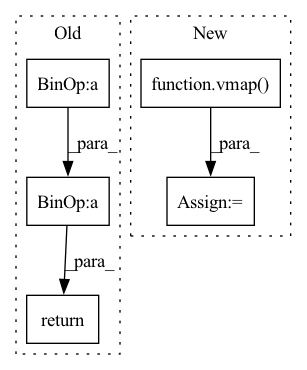

Pattern ID :971
Before Change
// Use the first control point and PCA to select the other three control points
objPts_w_cent = self.objPts.reshape((self.n, 3)) - center_objPts
u, s, vh = np.linalg.svd(np.matmul(objPts_w_cent.T, objPts_w_cent), full_matrices=True)
contPts_w_2 = contPts_w_1 + np.sqrt(s[0])* vh[0]
contPts_w_3 = contPts_w_1 + np.sqrt(s[1])*vh[1]
contPts_w_4 = contPts_w_1 + np.sqrt(s[2])*vh[2]
return np.array([contPts_w_1, contPts_w_2, contPts_w_3, contPts_w_4]).reshape(4, 3)
def compute_alphas(self):
// Construct matrix for alpha calculationAfter Change
// svd
objPts_w_cent = objPts - center.unsqueeze(1) // center the object points, 1 is for boardcasting
full_svd = vmap( partial(torch.linalg.svd, full_matrices=True))
u, s, vh = full_svd(torch.bmm(objPts_w_cent.transpose(-1, -2), objPts_w_cent))
// produce points TODO: change to batch implementation
res = []In pattern: SUPERPATTERN
Frequency: 4
Non-data size: 5
Instances Fragment ID: 4620613
Project Name: pypose/pypose
Commit Name: 762381a1eb57de9a7b7ffad5293e3bb33c859006
Time: 2023-02-24
Author: ztzhan1108@gmail.com
File Name: pypose/module/pnp.py
M Class Name: EPnP
N Class Name: EPnP
M Method Name: select_control_points(2)
N Method Name: select_control_points(1)
M Parent Class:
N Parent Class:
M File Name: pypose/module/pnp.py
N File Name: pypose/module/pnp.py
M Start Line: 108
M End Line: 118
N Start Line: 104
N End Line: 125
Before Change
if beta * x > threshold:
return x
return jnp.log(1. + jnp.exp(beta * x)) / beta
def softmax(x):After Change
:return: softplus on x
:rtype: jax.array
f = vmap( _softplus)
return f(x)
def _softmax(x): Fragment ID: 4620598
Project Name: dssc-projects/veni
Commit Name: ad26372faa6eec17671c9856ff18c2e82c979cb3
Time: 2022-05-08
Author: 93731561+dario-coscia@users.noreply.github.com
File Name: jax_forward/functional.py
M Class Name: AnonimousClass
N Class Name: AnonimousClass
M Method Name: softplus(1)
N Method Name: softplus(3)
M Parent Class:
N Parent Class:
M File Name: jax_forward/functional.py
N File Name: jax_forward/functional.py
M Start Line: 61
M End Line: 82
N Start Line: 136
N End Line: 152
Before Change
:return: leaky rectified linear unit on x
:rtype: jax.array
return jnp.maximum(0, x) + negative_slope * jnp.minimum(0, x)
def tanh(x):After Change
:return: leaky rectified linear unit on x
:rtype: jax.array
f = vmap( _leaky_relu)
return f(x)
def _tanh(x): Fragment ID: 4620596
Project Name: dssc-projects/veni
Commit Name: ad26372faa6eec17671c9856ff18c2e82c979cb3
Time: 2022-05-08
Author: 93731561+dario-coscia@users.noreply.github.com
File Name: jax_forward/functional.py
M Class Name: AnonimousClass
N Class Name: AnonimousClass
M Method Name: leaky_relu(1)
N Method Name: leaky_relu(2)
M Parent Class:
N Parent Class:
M File Name: jax_forward/functional.py
N File Name: jax_forward/functional.py
M Start Line: 15
M End Line: 25
N Start Line: 41
N End Line: 52
Before Change
:return: sigmoid on x
:rtype: jax.array
return jnp.exp(x) / (jnp.exp(x) + 1.)
def log_sigmoid(x):After Change
:return: sigmoid on x
:rtype: jax.array
f = vmap( _sigmoid)
return f(x)
def log_sigmoid(x): Fragment ID: 4620608
Project Name: dssc-projects/veni
Commit Name: ad26372faa6eec17671c9856ff18c2e82c979cb3
Time: 2022-05-08
Author: 93731561+dario-coscia@users.noreply.github.com
File Name: jax_forward/functional.py
M Class Name: AnonimousClass
N Class Name: AnonimousClass
M Method Name: sigmoid(1)
N Method Name: sigmoid(1)
M Parent Class:
N Parent Class:
M File Name: jax_forward/functional.py
N File Name: jax_forward/functional.py
M Start Line: 47
M End Line: 47
N Start Line: 97
N End Line: 98